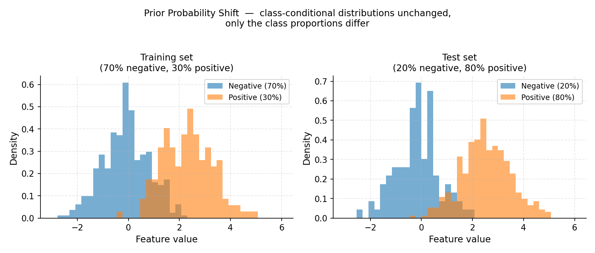
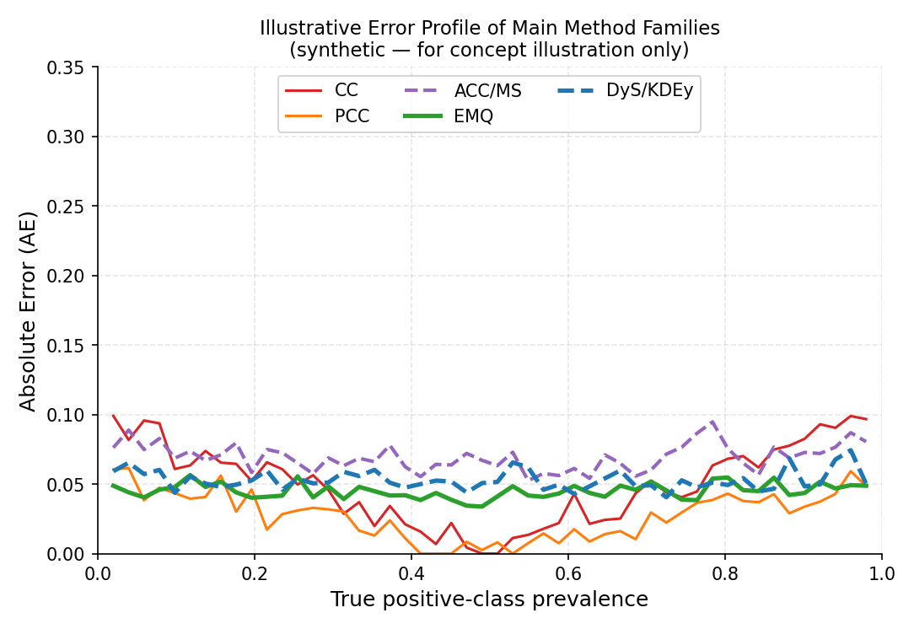

1. Quantification Foundations#
This page introduces the core theory behind quantification — what the problem is, why it differs from classification, how dataset shift motivates it, and how the main method families address it. Reading this page will help you understand why every parameter in every quantifier exists.
1.1. What Is Quantification?#
Quantification (also called class prevalence estimation or class prior estimation) is the task of estimating the proportion — or prevalence — of each class in an unlabelled dataset, rather than labelling individual instances.
Given:
A labelled training set \(L = \{(x_i, y_i)\}_{i=1}^{n}\) with \(y_i \in \{c_1, \ldots, c_k\}\),
An unlabelled test set \(U = \{x_j\}_{j=1}^{m}\),
the goal is to estimate the vector of class prevalences
The output is a probability vector \(\hat{p} \in \Delta^{k-1}\) (the probability simplex), where \(\hat{p}(c) \ge 0\) and \(\sum_c \hat{p}(c) = 1\).
Quickstart analogy
Imagine a hospital receives a batch of 1,000 blood samples. A pathologist does not need to diagnose every single patient — they need to know how many samples belong to each disease category to allocate resources. Quantification answers this aggregate question directly.
1.1.1. When Is Quantification the Right Tool?#
Quantification is the right tool when:
The final decision is about a population, not an individual (e.g. “how many tweets are about a product complaint?”).
Labelling every instance is too expensive, but estimating proportions is sufficient.
The class distribution is expected to shift between training and deployment.
Evaluation uses aggregate metrics (e.g. proportion of defective items in a production batch).
If you need a label for each instance, use a classifier. If you need the proportions of a batch, use a quantifier.
1.2. Why Not Just Classify and Count?#
The simplest approach — train a classifier, predict labels, count how many fall into each class — is called Classify and Count (CC). It is a valid baseline, but it is systematically biased whenever the class distribution in the test set differs from training.
1.2.1. The CC Bias#
Suppose a binary classifier is trained on a balanced dataset (50% positive, 50% negative) and achieves 90% accuracy. Now consider deploying it on a batch where only 5% of instances are truly positive.

CC (red) systematically overshoots at low prevalence and undershoots at high prevalence. PCC (orange) is less biased but still not corrected. The dashed grey line is the ideal unbiased estimator.#
The classifier will generate:
True positives: \(0.90 \times 0.05 = 0.045\) (from 5% positives it gets right)
False positives: \(0.10 \times 0.95 = 0.095\) (from 95% negatives it misclassifies)
CC’s estimated positive prevalence is \(0.045 + 0.095 = 0.14\), while the true value is \(0.05\) — an error of 9 percentage points, even with a very accurate classifier!
Forman (2005) showed empirically that CC consistently overestimates the minority class when the test prevalence is low and underestimates it when high, regardless of classifier accuracy. The bias is systematic and does not vanish with more data. (Forman, 2005)
Key insight
A classifier optimises instance-level accuracy, not aggregate-level accuracy. The two objectives are different. Specialised quantification methods optimise directly for the latter.
1.3. Dataset Shift#
Quantification is intimately linked to dataset shift — the phenomenon where the distribution of data changes between training and deployment. (Moreno-Torres et al., 2012)
{kind=link}

Prior probability shift: the feature distributions within each class (the histogram shapes) are identical between training and test, but the class proportions differ — 30% positive in training, 80% positive at test time.#
The three most relevant shift types for quantification are:
1.3.1. Prior Probability Shift (Label Shift)#
The class-conditional distribution stays the same, but class priors change:
This is the primary assumption for most quantification methods. A sentiment classifier trained in January may face a burst of positive reviews after a product launch — the features of “positive review” have not changed, but the proportion has.
Methods that assume this shift: CC, ACC, PCC, PACC, EMQ/SLD, DyS, HDy, KDEy.
1.3.2. Covariate Shift#
The input distribution changes, but the conditional label distribution is stable:
This occurs when the input features come from a different domain (e.g. a model trained on news articles applied to social media posts).
1.3.3. Concept Shift (Concept Drift)#
The relationship between features and labels changes:
This is the hardest case. Most standard quantification methods cannot fully correct for concept shift. Monitoring for drift and retraining are necessary.
Tip
When you are unsure which shift applies, start with methods that assume prior probability shift (the most common case). If performance is poor, check whether the feature distribution has also shifted.
1.4. The Aggregative Quantification Framework#
Most quantification methods in mlquantify follow the aggregative framework
introduced by (Esuli et al., 2023):
Fit — Train an underlying classifier (estimator) on labelled data, obtaining a representation of the training class distributions (confusion matrix, score histograms, density estimates, …).
Predict — Apply the estimator to each test instance to obtain predictions (hard labels or soft probabilities).
Aggregate — Combine the individual predictions into a single prevalence estimate for the batch.
This design mirrors scikit-learn’s estimator API: every aggregative
quantifier exposes fit(X, y), predict(X), and an additional aggregate
method for when predictions are already available.
from mlquantify.counting import PCC
from sklearn.linear_model import LogisticRegression
# 1. Build and fit
q = PCC(LogisticRegression())
q.fit(X_train, y_train)
# 2 & 3 combined — predict on new data
prevalences = q.predict(X_test)
# Or use aggregate if you already have posteriors
proba = q.estimator_.predict_proba(X_test)
prevalences = q.aggregate(proba)
1.4.1. The Role of Cross-Validation in fit#
Many aggregative methods need to estimate how the classifier behaves on unseen data (e.g. to estimate TPR/FPR for ACC, or score histograms for DyS/HDy). Using training-set predictions directly would give over-optimistic estimates.
To avoid this, mlquantify uses cross-validated predictions (also called
hold-out predictions or calibrated predictions) obtained by fitting the
estimator on a subset of the training data and predicting the held-out subset.
This is controlled by the cv parameter in fit:
|
Behaviour |
|---|---|
|
K-fold cross-validation; predictions are assembled from K non-overlapping folds. Recommended. |
|
The method uses its own default (usually 5-fold). Safe choice. |
Cross-validator object |
E.g. |
from mlquantify.counting import ACC
from sklearn.svm import SVC
# Use 10-fold stratified CV to estimate TPR/FPR
q = ACC(SVC(probability=True), cv=10, stratified=True)
q.fit(X_train, y_train)
Warning
Setting cv to a very small value (e.g. 2) on a small dataset can
produce noisy TPR/FPR or histogram estimates and hurt performance. The
default of 5 is a safe balance between bias and variance.
1.4.2. The estimator_fitted parameter#
If you have already trained your classifier (e.g. in a pipeline), pass
estimator_fitted=True to fit so mlquantify skips retraining and uses
the existing model:
from sklearn.ensemble import GradientBoostingClassifier
clf = GradientBoostingClassifier().fit(X_train, y_train)
# Skip refitting — use the already-trained clf
q = PCC(clf)
q.fit(X_train, y_train, estimator_fitted=True)
1.5. Method Families at a Glance#
{kind=link}

Illustrative error profile across positive-class prevalence levels (synthetic data — for concept illustration only). CC and PCC are most biased at extreme prevalences. Adjusted counting (ACC/MS) partially corrects this. EMQ, DyS and KDEy achieve consistently low error across the full prevalence range.#
mlquantify organises methods into families based on the representation
they build during training and the correction strategy they apply.
Family |
Representation |
Correction |
When to use |
|---|---|---|---|
Counting (CC, PCC) |
Hard / soft labels |
None |
Baseline; when training/test distributions are similar. |
Adjusted Counting (ACC, TAC, …) |
Confusion matrix / ROC curve |
Linear bias correction |
Binary problems with known classifier error rates. |
Likelihood (EMQ, CDE) |
Posterior probabilities |
EM-based prior correction |
Best single method under prior probability shift. |
Distribution Matching (DyS, HDy, KDEy) |
Score histograms / densities |
Mixture optimisation |
Strong performance; good for binary and multiclass. |
Nearest Neighbours (PWK) |
Feature space |
Imbalance-aware k-NN |
When a simple, interpretable baseline is needed. |
Neural (QuaNet) |
Deep embeddings |
Direct prevalence learning |
Large datasets with rich feature representations. |
Ensemble (EnsembleQ, QuaDapt) |
Any base quantifier |
Diversity + selection |
Robustness; when test prevalence is highly variable. |
Tip
If you are just getting started, try EMQ
with LogisticRegression — it is consistently among the top performers
and requires minimal tuning. (Saerens et al., 2002) (Esuli et al., 2023)
1.6. Choosing the Right Evaluation Protocol#
A single train/test split is often misleading for quantification because the test prevalence is fixed. Dedicated protocols generate many test samples with different prevalences from the same dataset:
APP (Artificial Prevalence Protocol) — sweeps prevalences from 0 to 1 in uniform steps. Standard in quantification research. Use this by default.
UPP (Uniform Prevalence Protocol) — samples prevalences uniformly from the simplex. Preferred for multiclass problems.
NPP (Natural Prevalence Protocol) — draws random subsets preserving natural class proportions. Less controlled, more realistic.
See Protocols for Quantification for full details and code examples.
1.6.1. Choosing the Right Evaluation Metric#
Quantification metrics penalise deviation between the estimated and true
prevalence vectors. The most important ones in mlquantify are:
Metric |
Import |
When to use |
|---|---|---|
MAE |
|
Default. Mean absolute difference per class. Interpretable. |
RAE |
|
When errors at low prevalences should be amplified (relative AE). |
KLD |
|
When probabilistic calibration of prevalences matters. |
NKLD |
|
Normalised KLD; comparable across different class counts. |
MSE |
|
Squared error; penalises large deviations more heavily. |
from mlquantify.metrics import MAE, RAE
from mlquantify.utils import get_prev_from_labels
true_prev = get_prev_from_labels(y_test)
pred_prev = quantifier.predict(X_test)
print(f"MAE: {MAE(true_prev, pred_prev):.4f}")
print(f"RAE: {RAE(true_prev, pred_prev):.4f}")
1.7. Multiclass Quantification#
All methods in mlquantify that are marked as binary-only are automatically
extended to multiclass problems via a decomposition strategy:
One-vs-Rest (OvR) — for each class \(c\), train a binary quantifier that estimates \(\hat{p}(c)\) vs. \(1 - \hat{p}(c)\), then renormalise. This is the default (
strategy='ovr').One-vs-One (OvO) — train a binary quantifier for every pair of classes \((c_i, c_j)\), then combine estimates. Less common, set
strategy='ovo'.
Natively multiclass methods (CC, PCC, GACC, GPACC, EMQ, KDEy) operate directly on \(k\) classes without decomposition.
from mlquantify.counting import ACC
from sklearn.linear_model import LogisticRegression
from sklearn.datasets import make_classification
X, y = make_classification(n_samples=500, n_classes=4,
n_informative=6, n_redundant=0,
random_state=42)
# OvR decomposition is applied automatically
q = ACC(LogisticRegression(), strategy='ovr')
q.fit(X[:400], y[:400])
q.predict(X[400:])
1.8. Further Reading#
For a comprehensive treatment of quantification theory, the canonical reference is:
Esuli, A., Fabris, A., Moreo, A., & Sebastiani, F. (2023). Learning to Quantify. Springer. Open access at https://doi.org/10.1007/978-3-031-20467-8
For the original CC/AC paper:
Forman, G. (2005). Counting Positives Accurately Despite Inaccurate Classification. ECML 2005, pp. 564–575.
For a comprehensive survey of quantification methods:
González, J., Díez, J., Chawla, N., & del Coz, J. J. (2017). A Review on Quantification Learning. ACM Computing Surveys, 50(5), 1–40.